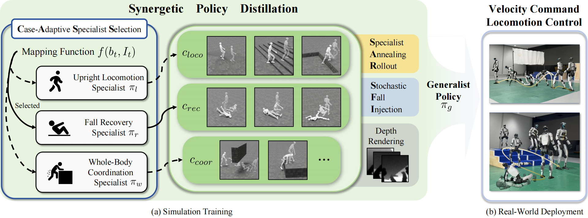

While recent advances have demonstrated strong performance in individual humanoid skills such as upright locomotion, fall recovery and whole-body coordination, learning a single policy that masters all these skills remains challenging due to the diverse dynamics and conflicting control objectives involved. To address this, we introduce X-Loco, a framework for training a vision-based generalist humanoid locomotion policy. X-Loco trains multiple oracle specialist policies and adopts a synergetic policy distillation with a case-adaptive specialist selection mechanism, which dynamically leverages multiple specialist policies to guide a vision-based student policy. This design enables the student to acquire a broad spectrum of locomotion skills, ranging from fall recovery to terrain traversal and whole-body coordination skills. To the best of our knowledge, X-Loco is the first framework to demonstrate vision-based humanoid locomotion that jointly integrates upright locomotion, whole-body coordination and fall recovery, while operating solely under velocity commands without relying on reference motions. Experimental results show that X-Loco achieves superior performance, demonstrated by tasks such as fall recovery and terrain traversal. Ablation studies further highlight that our framework effectively leverages specialist expertise and enhances learning efficiency.

We introduce the pipeline of the X-Loco framework as shown in above figure. We first train three specialist policies: upright locomotion $\pi_{l}$, fall recovery $\pi_{r}$, and whole-body coordination $\pi_{w}$. Subsequently, we propose a synergetic policy distillation to effectively consolidate these specialized capabilities into a single generalist policy $\pi_g$. Experimental results show that X-Loco achieves superior performance, demonstrated by tasks such as fall recovery and terrain traversal. Ablation studies further highlight that our framework effectively leverages specialist expertise and enhances learning efficiency.
@article{wang2026xloco,
title={X-Loco: Towards Generalist Humanoid Locomotion Control via Synergetic Policy Distillation},
author={Wang, Dewei and Wang, Xinmiao and Zhang, Chenyun and Shi, Jiyuan and Zhao, Yingnan and Bai, Chenjia and Li, Xuelong},
journal={arXiv preprint arXiv:2603.03733},
year={2026}
}